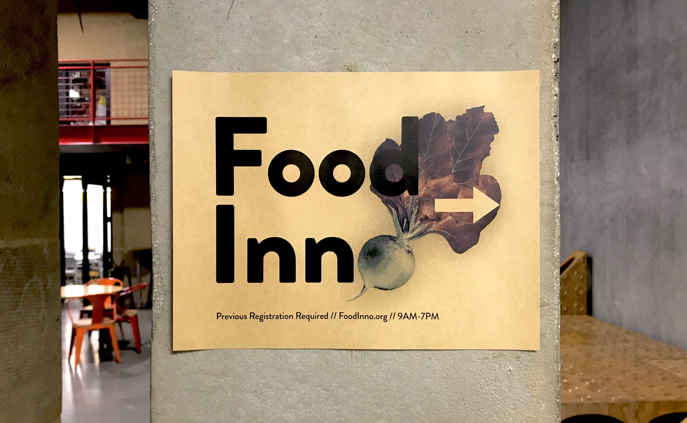

FoodInno
Jan 2019 - May 2019
Role
Co-Director
Visual Designer
Curator
Tools
Sketch
Ai and Ps
Fun Fact
0 beets were harmed in the making of this conference
A global food innovation and design conference focusing on Food Waste with over 20 speakers and panelists, 15 vendors and 150 attendees.
Focus:
Visual Design
Overview
Our mission at the FoodInno Institute is to build a collaborative environment of food innovators from all walks of life. FoodInno is a community that connects students, educators, chefs, food start-ups, farmers, and food policy makers to design the next food experience together. Along with being the co-director, I led our branding efforts in an attempt to create a fresh yet humble visual identity for the 4th annual conference.
Early Experiment with Food Puns, highlighting ingredients
Iterations
Goal: Highlight real food (fruits and veggies) in a modern and eye-catching way.
Our focus this year on the large-scale problems involving food waste had a heavy influence on the branding. From the beginning we knew we wanted to hold real food, fruits and veggies, at the center. This was also balanced by a desire to elevate and even modernize the ingredients to make them, and the topic of food waste, eye-catching and thought-provoking


A Grounding Symbol: Beets
After a few iterations, the beet quickly became our team mascot and VIP (very important pun: "Let's Beet Food Waste"). I explored the beet as an anchor for our visual language: a logo (of sorts) that placed more weight on the content of the conference than the people/organization putting it together. The color inversion represented our desire to look at existing systems in a new light, flipping age-old problems on their heads.
Exploration
Goal:Bring out nuanced textures and colors in the beet. Make it POP.


Animation
After some playing around, I realized we wanted to add a layer of animation and motion of the many materials we were sending to incoming guests. Through some easy-to-embed gifs, we were able to convey multiple pieces of information in a "templated" form.
left: Food Inno/Waste, right: Food Inno/Break
In Use
Booth Table Signs
Intro Slides


Posters
Outcome
With this single, strong visual element, we were able to activate the brand in all moments of the experience from our email signatures to the slides we showed during food breaks at the conference. Our guests vocalized how polished the conference felt and the liveliness of the brand!